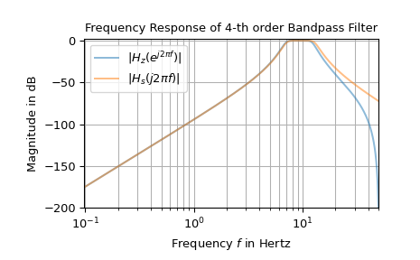

bilinear#
- scipy.signal.bilinear(b, a, fs=1.0)[source]#
Calculate a digital IIR filter from an analog transfer function by utilizing the bilinear transform.
- Parameters:
- barray_like
Coefficients of the numerator polynomial of the analog transfer function in form of a complex- or real-valued 1d array.
- aarray_like
Coefficients of the denominator polynomial of the analog transfer function in form of a complex- or real-valued 1d array.
- fsfloat
Sample rate, as ordinary frequency (e.g., hertz). No pre-warping is done in this function.
- Returns:
- betandarray
Coefficients of the numerator polynomial of the digital transfer function in form of a complex- or real-valued 1d array.
- alphandarray
Coefficients of the denominator polynomial of the digital transfer function in form of a complex- or real-valued 1d array.
See also
lp2lp,lp2hp,lp2bp,lp2bs,bilinear_zpk
Notes
The parameters \(b = [b_0, \ldots, b_Q]\) and \(a = [a_0, \ldots, a_P]\) are 1d arrays of length \(Q+1\) and \(P+1\). They define the analog transfer function
\[H_a(s) = \frac{b_0 s^Q + b_1 s^{Q-1} + \cdots + b_Q}{ a_0 s^P + a_1 s^{P-1} + \cdots + a_P}\ .\]The bilinear transform [1] is applied by substituting
\[s = \kappa \frac{z-1}{z+1}\ , \qquad \kappa := 2 f_s\ ,\]into \(H_a(s)\), with \(f_s\) being the sampling rate. This results in the digital transfer function in the \(z\)-domain
\[H_d(z) = \frac{b_0 \left(\kappa \frac{z-1}{z+1}\right)^Q + b_1 \left(\kappa \frac{z-1}{z+1}\right)^{Q-1} + \cdots + b_Q}{ a_0 \left(\kappa \frac{z-1}{z+1}\right)^P + a_1 \left(\kappa \frac{z-1}{z+1}\right)^{P-1} + \cdots + a_P}\ .\]This expression can be simplified by multiplying numerator and denominator by \((z+1)^N\), with \(N=\max(P, Q)\). This allows \(H_d(z)\) to be reformulated as
\[\begin{split}& & \frac{b_0 \big(\kappa (z-1)\big)^Q (z+1)^{N-Q} + b_1 \big(\kappa (z-1)\big)^{Q-1} (z+1)^{N-Q+1} + \cdots + b_Q(z+1)^N}{ a_0 \big(\kappa (z-1)\big)^P (z+1)^{N-P} + a_1 \big(\kappa (z-1)\big)^{P-1} (z+1)^{N-P+1} + \cdots + a_P(z+1)^N}\\ &=:& \frac{\beta_0 + \beta_1 z^{-1} + \cdots + \beta_N z^{-N}}{ \alpha_0 + \alpha_1 z^{-1} + \cdots + \alpha_N z^{-N}}\ .\end{split}\]This is the equation implemented to perform the bilinear transform. Note that for large \(f_s\), \(\kappa^Q\) or \(\kappa^P\) can cause a numeric overflow for sufficiently large \(P\) or \(Q\).
Array API Standard Support
bilinearhas support for Python Array API Standard compatible backends in addition to NumPy. The following combinations of backend and device (or other capability) are supported.Library
CPU
GPU
NumPy
✅
n/a
CuPy
n/a
✅
PyTorch
✅
⛔
JAX
⚠️ no JIT
⛔
Dask
⚠️ computes graph
n/a
CuPy does not accept complex inputs.
See Support for the array API standard for more information.
References
Examples
The following example shows the frequency response of an analog bandpass filter and the corresponding digital filter derived by utilizing the bilinear transform:
>>> from scipy import signal >>> import matplotlib.pyplot as plt >>> import numpy as np ... >>> fs = 100 # sampling frequency >>> om_c = 2 * np.pi * np.array([7, 13]) # corner frequencies >>> bb_s, aa_s = signal.butter(4, om_c, btype='bandpass', analog=True, output='ba') >>> bb_z, aa_z = signal.bilinear(bb_s, aa_s, fs) ... >>> w_z, H_z = signal.freqz(bb_z, aa_z) # frequency response of digital filter >>> w_s, H_s = signal.freqs(bb_s, aa_s, worN=w_z*fs) # analog filter response ... >>> f_z, f_s = w_z * fs / (2*np.pi), w_s / (2*np.pi) >>> Hz_dB, Hs_dB = (20*np.log10(np.abs(H_).clip(1e-10)) for H_ in (H_z, H_s)) >>> fg0, ax0 = plt.subplots() >>> ax0.set_title("Frequency Response of 4-th order Bandpass Filter") >>> ax0.set(xlabel='Frequency $f$ in Hertz', ylabel='Magnitude in dB', ... xlim=[f_z[1], fs/2], ylim=[-200, 2]) >>> ax0.semilogx(f_z, Hz_dB, alpha=.5, label=r'$|H_z(e^{j 2 \pi f})|$') >>> ax0.semilogx(f_s, Hs_dB, alpha=.5, label=r'$|H_s(j 2 \pi f)|$') >>> ax0.legend() >>> ax0.grid(which='both', axis='x') >>> ax0.grid(which='major', axis='y') >>> plt.show()

The difference in the higher frequencies shown in the plot is caused by an effect called “frequency warping”. [1] describes a method called “pre-warping” to reduce those deviations.